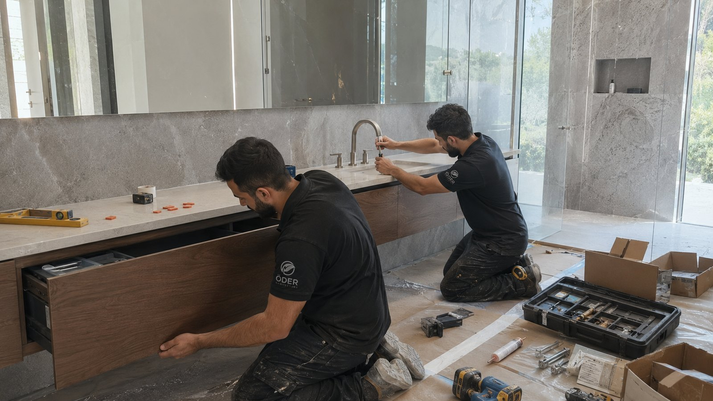

01 · Keşif ve brief
Alanı, hedefi, kullanıcıyı ve teslimat bölgesini netleştiririz.
Konut, villa, ofis, mağaza ve ekstrem özel projeler için iç mimarlık, konsept, mobilya ve uygulama koordinasyonu.
WhatsApp’tan teklif alın ↗Telefonla arayın: +90 534 547 22 39
Öder Mimarlık; projenin kullanım amacını, marka dilini, malzeme tercihlerini ve uygulama koşullarını birlikte değerlendirir. Tasarım, özel üretim, teşhir/depoma çözümleri ve saha koordinasyonu kapsamı proje ihtiyacına göre netleştirilir.
Alanı, hedefi, kullanıcıyı ve teslimat bölgesini netleştiririz.
Ölçüye, malzemeye ve kullanım senaryosuna göre çözüm geliştiririz.
Montaj, yerleşim ve son kontrolleri belirlenen kapsamda ilerletiriz.
Ticari mekân ve marka standı mobilya yerleşimi: Kumaş ve perde koleksiyonları için toplantı, numune ve teşhir alanları.
Türkiye ve Balkan ülkelerindeki proje taleplerini; konum, kapsam, üretim ve uygulama koşullarına göre değerlendiriyoruz.
Proje konumu, yaklaşık ölçü, istediğiniz hizmet, referans görseller ve hedef tarihiniz ilk değerlendirme için yeterlidir.
Projenin ihtiyacına göre tasarım, özel üretim, uygulama veya bunların birlikte yürüdüğü kapsamlar görüşülebilir.
Şehir/ülke, proje türü ve yaklaşık alanı paylaşın. Size uygun ilk görüşme akışını hazırlayalım.
Proje formuna geçin ↗Telefonla arayın: +90 534 547 22 39